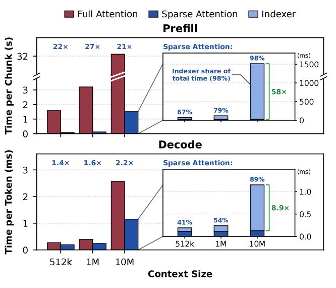
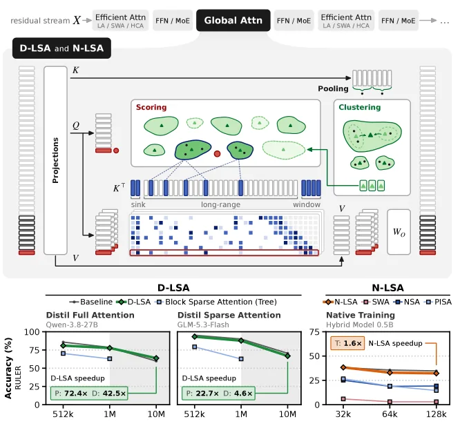
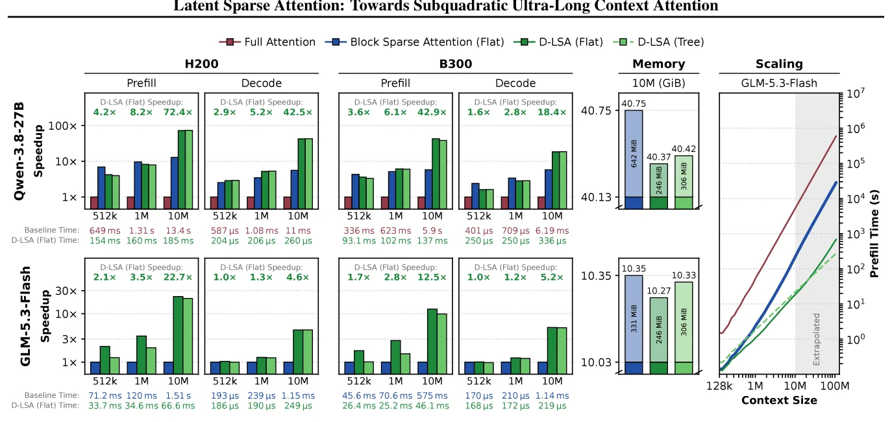
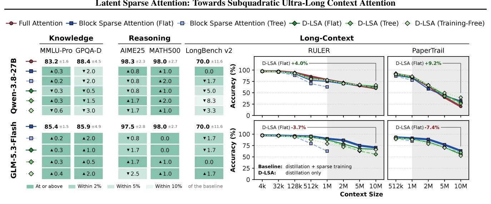

O gargalo da atenção em contextos ultra-largos
A evolução dos modelos de linguagem grandes (LLMs) está migrando de tarefas pontuais para fluxos de trabalho agênticos de longo alcance. Cenários como engenharia de software autônoma e pesquisa científica aberta exigem janelas de contexto massivas, frequentemente excedendo 1 milhão de tokens. Embora modelos recentes tenham estendido suas capacidades para além desse limite, o custo computacional da atenção full-attention cresce quadraticamente com o tamanho do contexto no prefill e linearmente no decode.
Para mitigar esse custo, a atenção esparsa tornou-se o padrão. Em vez de cada query (consulta) atender a todas as keys (chaves) anteriores, um indexador seleciona um subconjunto relevante. No entanto, em escalas ultra-largas, o próprio processo de indexação tornou-se o novo gargalo. Em contextos de 10 milhões de tokens, até 98% do tempo de prefill em uma camada de atenção esparsa é gasto apenas identificando quais chaves selecionar, anulando os ganhos de eficiência da atenção em si.

Latent Sparse Attention (LSA): A ideia central
Os autores propõem o Latent Sparse Attention (LSA), uma abordagem que elimina a necessidade de escanear ou pontuar todas as chaves individuais para cada query. Em vez disso, o LSA agrupa as chaves em clusters em um espaço latente aprendido. A query pontua os centróides desses clusters, permitindo que o modelo selecione apenas os grupos de chaves mais relevantes, em vez de processar cada token individualmente.
Essa mudança de paradigma permite dois mecanismos de busca: Flat e Tree. Na busca Flat, a query pontua todos os centróides de nível único. Na busca Tree, utiliza-se uma hierarquia de clusters, onde a query navega pela árvore de agrupamentos. A busca hierárquica é crucial para alcançar complexidade subquadrática, pois reduz drasticamente o número de comparações necessárias à medida que o contexto cresce, contornando a limitação linear dos indexadores tradicionais.

Implementação: D-LSA e N-LSA
O paper detalha duas variantes de implementação para integrar o LSA em arquiteturas existentes ou novas. A primeira é a Distilled-LSA (D-LSA), projetada para ser aplicada a modelos já pré-treinados. O D-LSA adiciona matrizes de projeção leves por camada e utiliza técnicas de distilação para aprender a estrutura de clustering sem re-treinar todo o modelo. Isso preserva a inteligência adquirida durante o treinamento original, adaptando-a apenas para a nova estrutura de atenção.
A segunda variante é a Native-LSA (N-LSA), que é treinada nativamente do zero usando apenas a perda de next-token prediction (NTP). Diferente de métodos que dependem de distilação de modelos maiores ou dados sintéticos complexos, o N-LSA aprende a estrutura de clustering diretamente através da tarefa final de previsão de tokens. Isso simplifica o pipeline de treinamento, embora exija que o modelo seja treinado desde o início com a arquitetura LSA.
Resultados de desempenho e precisão
Os experimentos foram conduzidos em modelos de grande escala, como o GLM-5.3-FLASH e o QWEN-3.8-27B, avaliando contextos de até 10 milhões de tokens. Os resultados mostram ganhos significativos de velocidade. Para o D-LSA no GLM-5.3-FLASH, uma camada de atenção única apresentou um speedup de 22.7x no prefill e 4.6x no decode em comparação à atenção esparsa original. Quando comparado à full-attention no QWEN-3.8-27B, os ganhos foram ainda mais expressivos: 72.4x no prefill e 42.5x no decode.
Esses ganhos de velocidade se traduzem em melhorias práticas na experiência do usuário. O tempo até o primeiro token (TTFT) foi reduzido em 2.2x para o GLM e 9.2x para o QWEN, utilizando o D-LSA. Esses números demonstram que a redução do custo de indexação não é apenas teórica, mas impacta diretamente a latência percebida em aplicações de produção.

Manutenção da precisão em escala
A principal preocupação ao reduzir a complexidade computacional é a perda de qualidade. O LSA foi avaliado em benchmarks estabelecidos, como o RULER, e em um novo benchmark chamado PaperTrail, desenvolvido pelos autores para testar a compreensão científica de longo alcance. O PaperTrail exige que o modelo encontre e conecte fatos através de artigos científicos não vistos durante o treinamento.
Os resultados indicam que o D-LSA mantém precisão semelhante à atenção cheia e às baselines esparsas tradicionais, mesmo em contextos de 10 milhões de tokens. Isso valida que o clustering em espaço latente consegue capturar as dependências semânticas necessárias, sem perder informações críticas dispersas pelo contexto longo. O N-LSA, por sua vez, mostrou-se capaz de igualar a precisão da full-attention com um speedup de treinamento de 1.6x por camada em contextos de 128k tokens.

Limitações e considerações práticas
Apesar dos avanços, o paper reconhece limitações importantes. O LSA reduz o custo de encontrar as chaves, mas não o custo de armazená-las. O cache KV (Key-Value) ainda cresce linearmente com o contexto, o que significa que a memória GPU permanece um gargalo crítico. Além disso, o método é ortogonal a técnicas de compressão de cache ou previsão de múltiplos tokens, podendo ser combinado com elas no futuro.
Outra observação crítica diz respeito à busca hierárquica (Tree). Os autores notaram que, além de 1 milhão de tokens no GLM-5.3-FLASH, a busca em árvore perde precisão mais rapidamente do que a busca plana (Flat). A busca em árvore só supera a busca plana no decode a partir de cerca de 5 milhões de tokens com uma única requisição. Isso sugere que a escolha entre Flat e Tree deve ser feita com base no tamanho do contexto e na carga de trabalho específica.
Escopo do treinamento nativo
O treinamento nativo (N-LSA) foi demonstrado em uma escala menor, com modelos de aproximadamente 0.5 bilhões de parâmetros e até 128k tokens de contexto. Os autores deixam em aberto se o treinamento nativo escalará efetivamente para modelos maiores, contextos mais longos e para a busca em árvore. Isso indica que, embora o N-LSA seja promissor como uma alternativa ao distilamento, sua eficácia em escala de frontier models ainda precisa de validação adicional.
O código, os kernels GPU para H200 e B300, e a integração com SGLang foram liberados, facilitando a reprodução dos resultados. Isso permite que a comunidade teste o LSA em seus próprios pipelines, especialmente para aplicações que requerem janelas de contexto massivas sem a sobrecarga computacional da atenção densa.
Conclusão
O Latent Sparse Attention representa um passo prático para viabilizar a atenção em contextos ultra-largos. Ao substituir a varredura linear de chaves por um clustering em espaço latente, o LSA ataca diretamente o gargalo de indexação que limita a eficiência da atenção esparsa tradicional. Com a D-LSA, é possível habilitar contextos de milhões de tokens em modelos existentes com ganhos de velocidade significativos e perda mínima de precisão. O N-LSA oferece um caminho alternativo para treinamento nativo, embora seus limites de escalabilidade ainda sejam uma área de pesquisa aberta.
O que fica
- O LSA substitui a busca linear por clustering hierárquico, reduzindo o custo de indexação de O(T) para subquadrático no prefill.
- D-LSA permite distilar o método em modelos pré-treinados sem re-treinamento completo, mantendo a precisão original.
- Em contextos de 10M tokens, o D-LSA acelera o prefill em até 72x e o decode em 42x comparado à atenção cheia.
- O N-LSA treina nativamente apenas com a perda de next-token prediction, alcançando precisão equivalente à atenção cheia.
Paper original: Latent Sparse Attention: Towards Subquadratic Ultra-Long Context Attention
Comentários
Nenhum comentário ainda. Seja o primeiro.